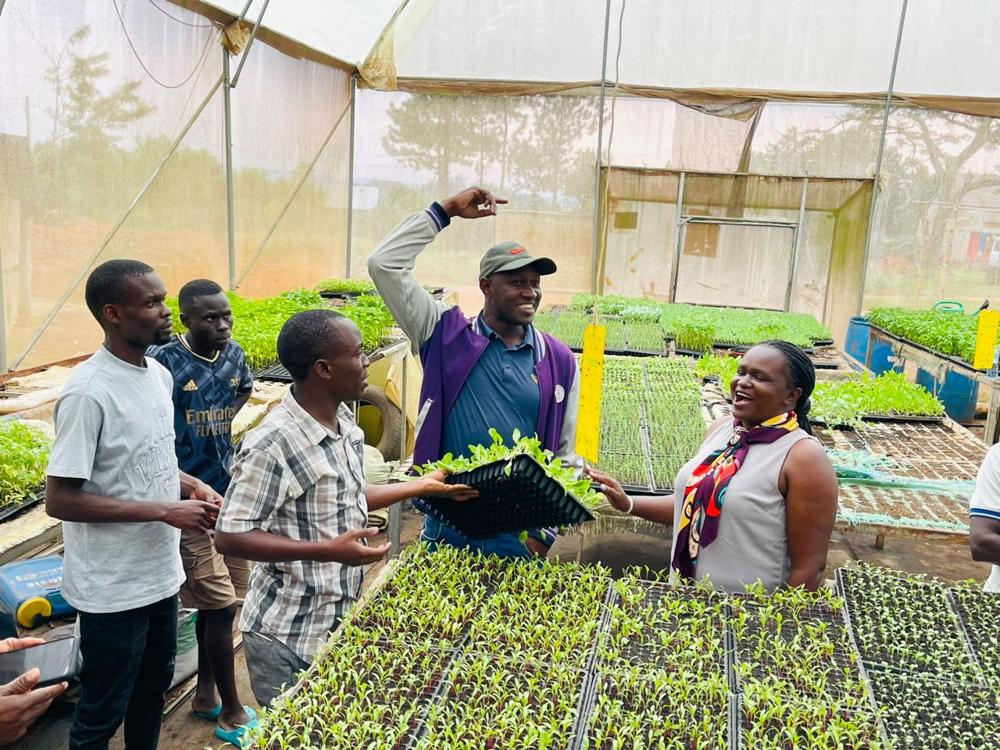
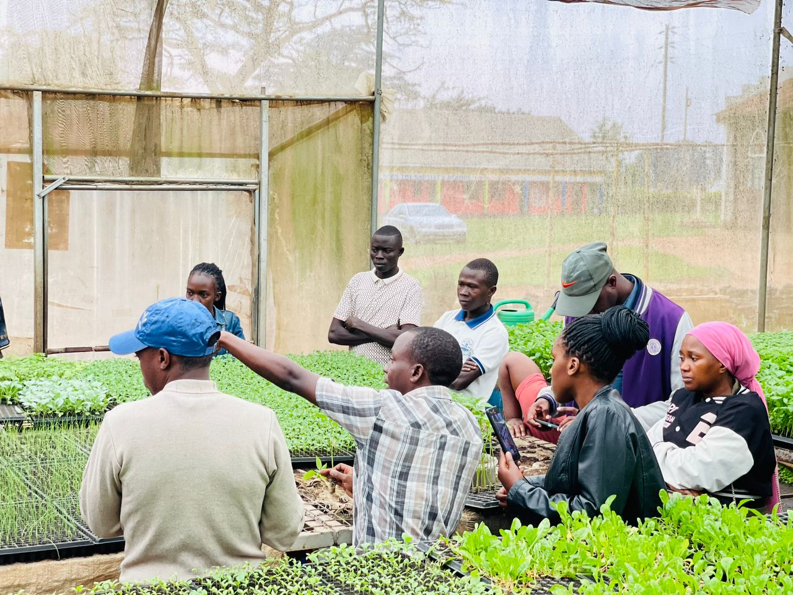
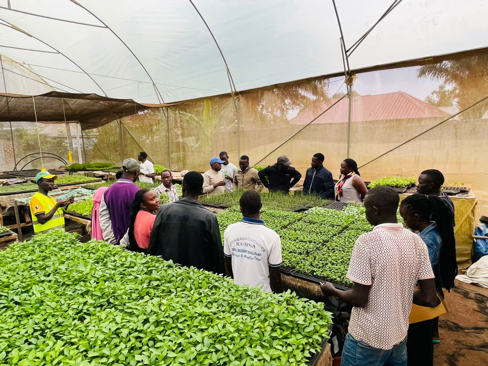
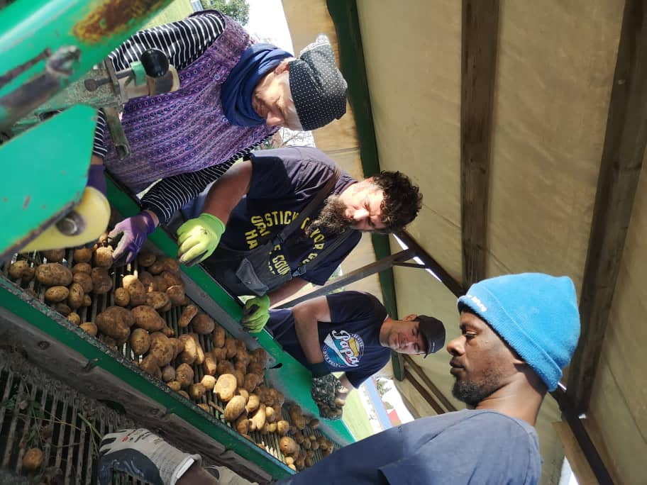
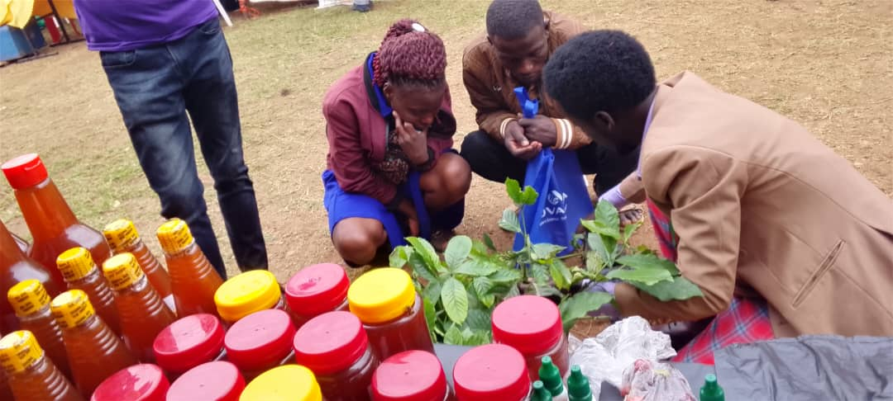
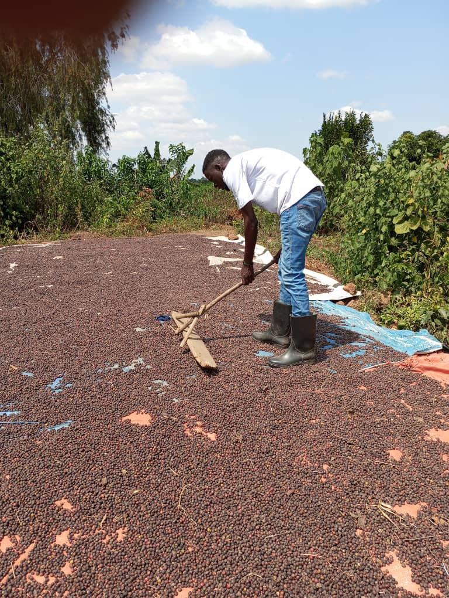
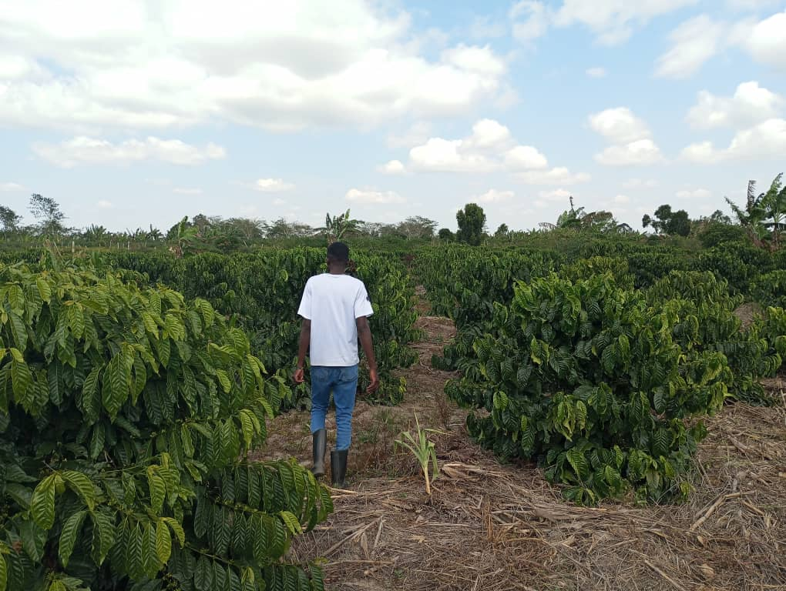

Serving the community through rehabilitation, agriculture, and sustainable development.
A programme under Audible Voices
Generational Farms Development Initiative (GFDI) is a community-based development organisation operating under Audible Voices, seeking to build productive livelihoods, knowledge, healthy communities and resilient natural resources whose benefits can continue across generations.
GFDI is established at district level as a Community-Based Organisation (CBO), initially operating in Kyotera District, Uganda. Beyond its agricultural mission, GFDI serves as a rehabilitation pathway for individuals supported by Audible Voices, offering them practical skills and a fresh start through farming.
GFDI helps with farm hosting, volunteer programs, starting farms on others' land with permission, taking care of these farms for both international and local farmers, hosting volunteers both local and international, farm planning, farm planting, farm management, and internship placement.
A prosperous, empowered and resilient society where people, farms, communities and natural resources thrive across generations.
To empower communities and individuals to build sustainable livelihoods and resilient futures through agriculture, education, enterprise development, environmental conservation, health, skills development and inclusive community transformation.







Climate-smart agriculture; coffee; food crops; agroforestry; livestock; model farms; farmer training; post-harvest handling; records and market access.
Skills; enterprise development; savings; entrepreneurship; leadership; employment/self-employment pathways.
Tree planting; restoration; soil and water conservation; agroforestry; climate awareness.
Farmer field learning; practical training; digital literacy; research; demonstrations; knowledge exchange.
Nutrition; hygiene; sanitation; health awareness; community mobilisation; support for vulnerable households.